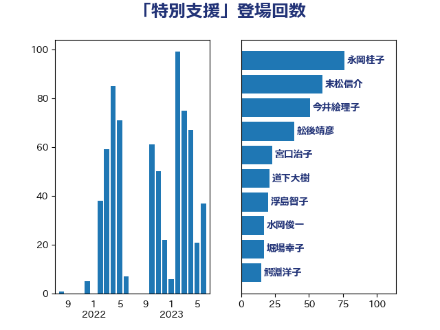

単語「特別支援」

| 萩生田光一 | 自由民主党 | 80 回 |
| 末松信介 | 自由民主党 | 60 回 |
| 今井絵理子 | 自由民主党 | 21 回 |
| 山下芳生 | 日本共産党 | 21 回 |
| 浮島智子 | 公明党 | 20 回 |
| 水岡俊一 | 立憲民主党 | 14 回 |
| 宮口治子 | 立憲民主党 | 13 回 |
| 櫻井周 | 立憲民主党 | 12 回 |
| 田野瀬太道 | 無所属 | 12 回 |
| 伊藤孝恵 | 国民民主党 | 11 回 |
| 舩後靖彦 | れいわ新選組 | 11 回 |
| 鰐淵洋子 | 公明党 | 11 回 |
| 大石あきこ | れいわ新選組 | 9 回 |
| 山田勝彦 | 立憲民主党 | 9 回 |
| 横沢高徳 | 立憲民主党 | 9 回 |
| 道下大樹 | 立憲民主党 | 9 回 |
| 勝部賢志 | 立憲民主党 | 8 回 |
| 仁木博文 | 無所属 | 7 回 |
| 柴田巧 | 日本維新の会 | 5 回 |
| 白石洋一 | 立憲民主党 | 5 回 |
| 上野賢一郎 | 自由民主党 | 4 回 |
| 吉良よし子 | 日本共産党 | 4 回 |
| 宮本徹 | 日本共産党 | 4 回 |
| 後藤茂之 | 自由民主党 | 4 回 |
| 杉久武 | 公明党 | 4 回 |
| 浜田聡 | NHK党 | 4 回 |
| 西村康稔 | 自由民主党 | 4 回 |
| 上野通子 | 自由民主党 | 3 回 |
| 小宮山泰子 | 立憲民主党 | 3 回 |
| 深澤陽一 | 自由民主党 | 3 回 |
| 矢倉克夫 | 公明党 | 3 回 |
| 丹羽秀樹 | 自由民主党 | 2 回 |
| 堀場幸子 | 日本維新の会 | 2 回 |
| 塩田博昭 | 公明党 | 2 回 |
| 山田太郎 | 自由民主党 | 2 回 |
| 岩渕友 | 日本共産党 | 2 回 |
| 石井苗子 | 日本維新の会 | 2 回 |
| 若宮健嗣 | 自由民主党 | 2 回 |
| 金村龍那 | 日本維新の会 | 2 回 |
| 下野六太 | 公明党 | 1 回 |
| 中曽根康隆 | 自由民主党 | 1 回 |
| 佐々木さやか | 公明党 | 1 回 |
| 吉川元 | 立憲民主党 | 1 回 |
| 國重徹 | 公明党 | 1 回 |
| 城井崇 | 立憲民主党 | 1 回 |
| 堤かなめ | 立憲民主党 | 1 回 |
| 小倉將信 | 自由民主党 | 1 回 |
| 山崎正恭 | 公明党 | 1 回 |
| 岸真紀子 | 立憲民主党 | 1 回 |
| 斎藤嘉隆 | 立憲民主党 | 1 回 |
| 本村伸子 | 日本共産党 | 1 回 |
| 根本幸典 | 自由民主党 | 1 回 |
| 河野義博 | 公明党 | 1 回 |
| 渡辺創 | 立憲民主党 | 1 回 |
| 源馬謙太郎 | 立憲民主党 | 1 回 |
| 石垣のりこ | 立憲民主党 | 1 回 |
| 石川大我 | 立憲民主党 | 1 回 |
| 笠浩史 | 無所属 | 1 回 |
| 藤田文武 | 日本維新の会 | 1 回 |
| 西岡秀子 | 国民民主党 | 1 回 |
| 野村哲郎 | 自由民主党 | 1 回 |
| 野田聖子 | 自由民主党 | 1 回 |
| 金城泰邦 | 公明党 | 1 回 |
| 高橋光男 | 公明党 | 1 回 |
| 高見康裕 | 自由民主党 | 1 回 |
| 高野光二郎 | 自由民主党 | 1 回 |